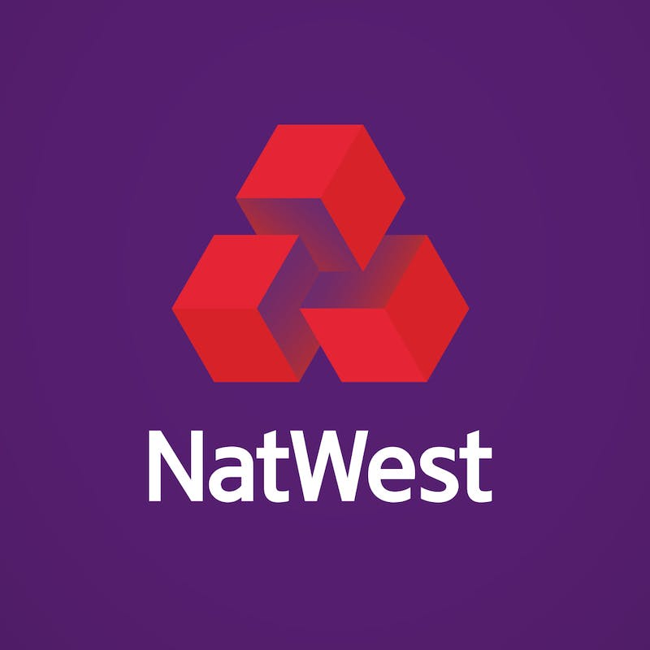

Aug '23 - Present
Graduate Teaching Assistant | Bio-MIBLab
- • Developing an automated long clinical notes summarization system
using large language models (LLMs) such as BART, T5, GPT-4, BERTSUM, and Longformer to enhance clinical
workflow efficiency.
- • Evaluating LLM’s faithfulness and factualness with metrics like
QuestEval, Concept-F1, and SummaC, ensuring Trustworthy AI.

July 2022 - July 2024
Software Engineer | NatWest Group
- • Developed an orchestrator service leveraging multi-threading techniques using Java and Spring, reducing API response time to less than 100ns, optimizing system performance for high-throughput transaction processing.
- • Scaled a REST API using Redis to dynamically filter international transaction data using hashing techniques and advanced data structures, improving data retrieval efficiency by 30% and reducing system latency in real-time operations.
- • Led Agile cross-functional teams to migrate a mainframe job monitoring tool to a React-based web app, streamlining approval/rejection processes across 4 banking platforms and supporting 60K daily users.
- • Implemented CI/CD pipelines using GitLab to deploy on Pivotal Cloud Foundry, achieving a 15% improvement in deployment speed and ensuring high availability through load balancing and auto-scaling.
- • Containerized microservices with Docker and orchestrated them using Kubernetes, reducing infrastructure costs by 20% while improving fault tolerance across multi-node environments and application scalability.
- • Mentored 5 junior software developers on backend and front-end best practices, fostering continuous learning.
May 2021 - July 2021
Software Engineer Intern | Detect Technologies
- • Conducted Exploratory Data Analysis (EDA) on 1K+ text files using regex, pandas, and stemming.
- • Implemented transfer learning on transformer models like BERT and SpaCy to detect racial bias in each document.
- • Enhanced a text summarization model utilizing BART to visualize insights from interview transcripts.
Jul 2019 - May 2021
Treasurer | Department of Electronics and Communication Engineering
- • Oversaw the financial administration of the department and provided financial reporting for two academic years.